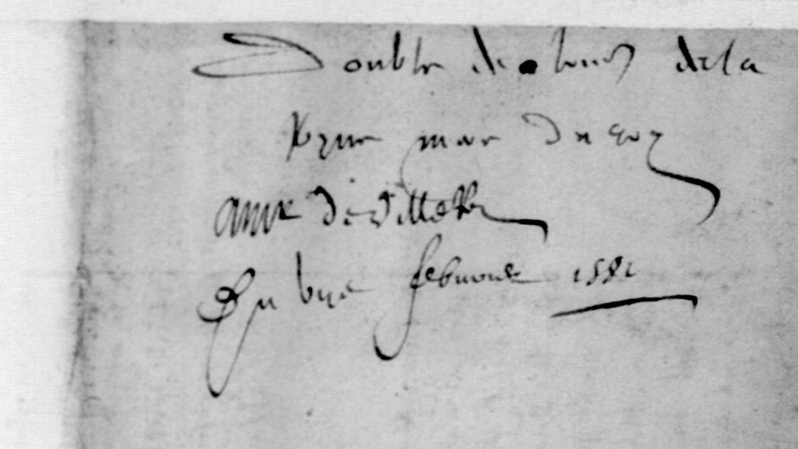

01 The letter and the record
Villeroy, secretary of state, was in Guyenne with Bellièvre and the duc d’Anjou, carrying out the peace of Fleix (November 1580). Catherine writes from Chenonceau about the chamber of justice for Guyenne, the money for the troops, the handing back of Mende, the quarrel between the dukes of Montpensier and Nevers, and the embassy that was to go to England for Anjou’s marriage to Elizabeth. The cipher block is one sentence in that last part: why the court is not pressing the prince Dauphin, Montpensier’s son, to go to England.
| DECODE | R4157, “Non-decrypted”, 9 pp., sender and recipient unknown, 5 Feb 1587 |
|---|---|
| Actually | Catherine de Médicis → Nicolas de Neufville, seigneur de Villeroy, Chenonceau, 7 (and 8) February 1581; BnF fr. 15564 ff. 30–34, Gallica views 40–44. DECODE image P7 (f. 38, “Madame…”) belongs to another letter. |
| Cipher | f. 33r, eight lines, 289 signs; deciphered at the time in the left margin and on three lines under the block |
| In print | Lettres de Catherine de Médicis, ed. Baguenault de Puchesse, t. VII (1899), pp. 349–353, “Orig. fonds français 15564, f° 30” |

02 The cipher block

The cipher is a homophonic substitution on Greek letters, digits and invented signs, one to three signs per letter, with special signs for mm and ss. A small nomenclator covers de, le, la, que, qui, pour, nous, mais, faire, tout, avec, dict, prince and Angleterre, and it is used for syllables as well: fi[de]lite, [de]mourer, Con[de], [le]gation, mon[dict]. An overbar marks several of the codes. Nulls pad the start of the block, the end of line 4 and the end of the last line.
03 The reading
One line per manuscript line; codes in brackets, nulls in braces. The clear text before the block is “car, à ce que j’entends, nous n’i gaingnerions rien, se dizant par deçà qu’il”.
{3 nulls} DOIBT AL
ER EN FLANDRES RECEUOIR [LE] SERMENT [DE] FI[DE]LITE [DE] CEULX [DE]S {null}
PAIS BAS [POUR] MON FILZ ET [QUI]L Y DOIBT [DE]MOURER ET [QUE] [LE] [PRINCE] [DE] CON[DE]E DO
IBT MENER [LE]S FORCES [QUI] S’ASSEMBLENT ET [FAIRE] [TOUT] CE [QUI]LZ [POUR]RONT [POUR]
[LE] SERUICE [DE] MON[DICT] FILZ [QUI] SE [DICT] AUSSI Y [DE]BUOIR ALER {3 nulls}
AU TEMPS [QUE] [NOUS] AUEZ ESCRIPT ET NON [DE]UANT [MAIS] [NOUS] NE LAISSER
ONS [DE] [LE] NOMMER [AVEC] [LE][DICT] SIEUR [DE] MONPENSIER AU[DICT] POUOI(R)
[DE] [LA] [LE]GATION D’[ANGLETERRE] {20 signs of padding}
Normalised: “…se dizant par deçà qu’il doibt aller en Flandres recevoir le serment de fidélité de ceulx des Païs-Bas pour mon filz, et qu’il y doibt demourer, et que le prince de Condé doibt mener les forces qui s’assemblent, et faire tout ce qu’ilz pourront pour le service de mondict filz, qui se dict aussi y debvoir aller au temps que nous avez escript, et non devant; mais nous ne laisserons de le nommer avec ledict sieur de Montpensier audict pouvoir de la légation d’Angleterre.”
In English: “…since it is said here that he [the prince Dauphin] is to go to Flanders to receive the oath of fealty of the people of the Low Countries for my son [Anjou], and to stay there, and that the prince of Condé is to lead the forces now gathering and do all they can for my son’s service, who says he means to go there too at the time you wrote to us, and not before. But we shall not fail to name him, with the said lord of Montpensier, in the commission for the embassy to England.”
The contemporary decipherment and the 1899 edition give the same text, except that they lack et before non devant and de before le nommer. The edition also spells the name Montpensier where the cipher has Monpensier.
04 Method
- The DECODE images are Gallica openings of fr. 15564 ff. 30–34 and a crop of the block. The docket and the content (Anjou in the Low Countries, Condé’s troops, “Chenonceau”) pointed to 1581. The letter is in volume VII of Catherine’s letters, not in volume IX where a 1587 date would have put it.
- The block was transcribed from the Gallica native scan, one label per sign. A first attempt without the key, aligning the signs with the printed text (one sign per letter plus nulls, by EM and annealing), failed. The printed passage turned out to be only half of the plaintext: the rest of the decipherment is on the lines under the block, which at first looked like the letter’s clear continuation.
- Tomokiyo’s reconstruction for “BnF fr. 15564, f.33” (Cryptiana, French ciphers during the reigns of Charles IX and Henry III) read the block as soon as the labels were mapped onto it. A second pass at double magnification split signs that the first labels had merged: forked ψ = n and curled ɣ = t; filled ᴀ = z and Δ = f; ϖ = g, the looped u = s and the &-shape = z; ɦ = u and б = e; small v = e and capital V = tout; bold ʒ = avec and barred Ʒ = e; ɤ = ss.
- Values missing from the published table were fixed from the text: 18 = dict (four times: mon[dict] filz, se [dict], le[dict] sieur, au[dict]); C̄σ = mais; ß̄ = la; ō = Angleterre; 4/b = nous, not vous (que nous avez escript, mais nous ne laisserons); ℬ = p, ꝏ = u, ꝑ = t, F̣ = i, ϑ = l, d = x.
05 The last line
After “[de] [la] [le]gation d” the last line has an overbarred ō and then twenty signs. The reading takes ō as the code for Angleterre and the twenty signs as padding:
- the contemporary decipherer, who had the key, ends at “de la legation d’Ang[leter]re” and writes nothing more;
- f. 33v opens in clear with the next sentence, “Nous adviserons, aiant oy ledict La Fin…”;
- the tail contains Tomokiyo’s declared null Z7 twice, and the same signs (Ʒ with a dagger, the double f, a small raised hook) that pad the start of the block before “doibt”;
- the few tail signs that have letter values give “a l mm a que”, which is not French.
So Tomokiyo’s “the first d” is the d’ of d’Angleterre, and the rest was never meant to be read.
06 What stays open
- ō = Angleterre occurs once and is fixed by the decipherer’s “d’Ang…re” and the edition, not by a second occurrence: grade M.
- The Latin e after the de code in Condé is either an e (for é) or a null: grade M.
- “pouoi” at the end of line 6 lacks its r. Either the encipherer left it out or the Z that opens line 7 was meant for both r and de.
- Everything else reads with a key value (H from Tomokiyo’s table, or C against the contemporary decipherment).
07 Sources
- BnF français 15564 ff. 30–34, Gallica, views 40–44 (cipher on view 43); DECODE R4157.
- Lettres de Catherine de Médicis, t. VII (1579–1581), ed. le comte Baguenault de Puchesse, Paris 1899, pp. 349–353 (archive.org).
- Satoshi Tomokiyo, French ciphers during the reigns of Charles IX and Henry III, Cryptiana, section “BnF fr. 15564, f.33” (reconstructed key).
The transcription (tokens.txt), the key with its sources (key.tsv), the reading and the notes are in the repository folder r4157/.